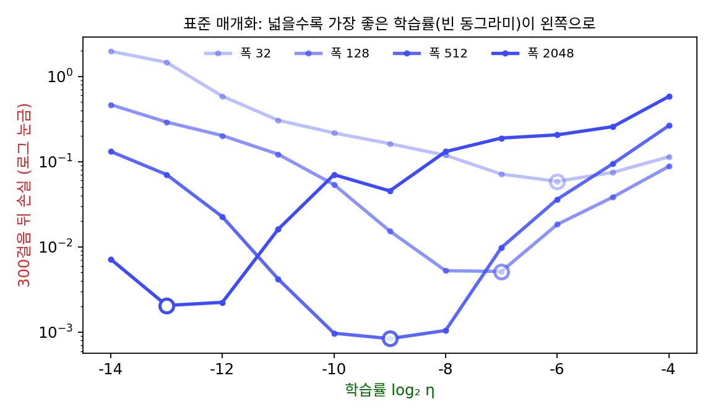

μP: 폭이 달라져도 같은 학습률로
이 장의 물음
학습률은 보통 짧은 학습 몇 번으로 고르는데, 후보 몇 개로 몇백 스텝씩 돌려 보고 손실이 가장 잘 내려간 값을 쓴다. 모델이 작을 때는 이 일이 싸지만, 한 번 학습하는 데 몇 주가 걸리는 큰 모델에서는 후보마다 처음부터 돌려 볼 수가 없다. 그래서 작은 모델에서 고른 학습률을 큰 모델에 그대로 옮겨 쓰고 싶어진다.
그런데 실제 큰 모델들의 학습률은 크기마다 다르게 잡혀 있다. GPT-3 논문(브라운 외, 2020)은 크기가 다른 모델 여덟 개를 학습하며 그 설정을 표로 밝혔다. 그 가운데 넷을 아래 표에 옮겼는데, 표의 폭은 한 층에서 토큰 하나를 나타내는 벡터의 길이(논문의 d_model)다.
| 모델 | 파라미터 수 | 층 수 | 폭 | 학습률 |
|---|---|---|---|---|
| GPT-3 Small | 1억 2,500만 | 12 | 768 | 6.0 × 10⁻⁴ |
| GPT-3 XL | 13억 | 24 | 2,048 | 2.0 × 10⁻⁴ |
| GPT-3 13B | 130억 | 40 | 5,140 | 1.0 × 10⁻⁴ |
| GPT-3 175B | 1,750억 | 96 | 12,288 | 0.6 × 10⁻⁴ |
모델이 클수록 학습률이 작은데, 층 수도 함께 늘었으니 폭 하나만의 효과라고 단정할 수는 없다. 그래도 같은 설계에서 폭만 넓혔을 때 왜 같은 학습률이 맞지 않는지는 물음으로 남는다. 넓은 모델의 학습률은 직접 돌려 보기 전에는 알 수 없는 걸까?
계산을 어디에 쓰느냐에도 물음이 있다. GPT-3 의 가장 큰 모델은 파라미터 1,750억 개를 토큰 3,000억 개로 학습했다. 같은 계산이면 모델을 줄이고 데이터를 늘리는 편이 나았을까?
이 장은 다음 물음에 차례로 답한다.
- 폭을 넓히면 같은 학습률로 내딛는 한 스텝이 왜 더 커질까?
- 학습률을 폭에 맞춰 줄이기만 하면 넓은 망도 좁은 망처럼 배울까? 폭이 아주 넓어지면 망 안쪽에서는 무슨 일이 생길까?
- 폭이 달라져도 망 안쪽의 특징이 같은 크기로 움직이게 하려면 초기화와 층마다의 학습률을 어떻게 정해야 할까?
- 그렇게 하면 좁은 망에서 찾은 학습률을 넓은 망에 정말 그대로 쓸 수 있을까?
- 계산량이 정해졌을 때 모델 크기와 데이터 양은 어떻게 나눠야 할까?
폭과 학습률: 넓을수록 같은 스텝이 출력을 더 크게 바꾼다
GPT-3 표에서 폭이 768 에서 12,288 로 16배가 될 때 학습률은 6.0 × 10⁻⁴ 에서 0.6 × 10⁻⁴ 로 10분의 1이 되었다. 연구팀이 크기마다 학습률을 따로 정했다는 뜻이다. 그러나 표만 봐서는 학습률을 폭 때문에 줄였는지, 층 수 때문인지, 그저 큰 모델이라 조심한 것인지 가릴 수 없다. 폭 하나만 바꾸고 나머지는 그대로 둔 실험이 있다면 가려낼 수 있을 텐데, 폭이 정말 학습률을 움직인다면 왜 그럴까?
역사: 폭만 바꾼 트랜스포머
바로 그 실험을 보인 것은 마이크로소프트와 OpenAI 의 연구자 열 명이 2022년에 낸 논문의 첫 그림이다. 논문 제목은 「Tensor Programs V: 영점 하이퍼파라미터 옮기기로 큰 신경망 조율하기(Tuning Large Neural Networks via Zero-Shot Hyperparameter Transfer)」(양 외, 2022)다. 첫 두 저자는 그레그 양(Greg Yang)과 에드워드 휴(Edward J. Hu)다. 그들은 트랜스포머의 폭(d_model)만 128 부터 8,192 까지 바꾸고, 흔히 쓰는 초기화와 학습률 규칙을 그대로 둔 채 Adam 으로 학습하며 학습률을 훑었다. 폭마다 손실이 가장 낮은 학습률이 달랐고, 넓을수록 그 최적 학습률이 더 작은 값으로 밀려났다. 그림 설명에는 넓은 망이 좁은 망보다 늘 낫지도 않았다는 말이 붙어 있으니, 모델을 키우면 좋아진다는 믿음이 학습률 하나 때문에 흔들린 것이다.

폭 n 층 하나에서 한 스텝
최적 학습률이 왜 밀려나는지는 가장 작은 망에서도 보이니, 출력이 하나인 층 하나를 생각하자. 입력 x는 좌표가 n개이고 좌표마다 +1 이나 −1 이다. 출력은 가중치 w와 입력의 내적 ŷ = w·x이고, 정답 y와의 손실은 ½(ŷ − y)²이다. 손실의 그래디언트는 (ŷ − y)x이므로, 학습률 η로 한 스텝 가면 가중치는 Δw = −η(ŷ − y)x만큼 바뀐다. 경사하강 한 스텝이 출력을 얼마나 바꾸는지 적으면 다음과 같다.
가중치를 처음에 분산 1/n인 정규분포로 뽑고(층을 지나도 신호의 크기가 지켜지게 하는 흔한 초기화), 폭만 바꿔 가며 같은 η = 0.01 로 한 스텝씩 가 보았다. 정답은 y = 1 이다.
| 폭 n | 처음 오차 ŷ − y | 출력 변화 Δŷ | 한 스텝 뒤 오차 | 오차의 배율 1 − ηn |
|---|---|---|---|---|
| 64 | +1.104 | −0.707 | +0.397 | +0.36 |
| 256 | −0.855 | +2.189 | +1.334 | −1.56 |
| 1,024 | −0.974 | +9.973 | +8.999 | −9.24 |
| 4,096 | −0.929 | +38.057 | +37.128 | −39.96 |
폭 64 에서는 오차 1.104 가 한 스텝에 0.397 로 줄어든다. 폭 256 에서는 −0.855 였던 오차가 정답을 지나쳐 +1.334 가 되고, 폭 4,096 에서는 +37.1 까지 튀어 나간다. 식이 말해 주듯 한 스텝 뒤의 오차는 처음 오차의 1 − ηn배여서, 같은 학습률이 폭을 곱한 크기로 출력을 흔든다.
가중치 n칸의 변화가 모두 같은 쪽으로 출력을 밀기 때문에 스텝이 폭에 비례한다. 칸 하나의 변화 −η(ŷ − y)xᵢ는 작지만, 그것에 다시 xᵢ를 곱해 더하면 xᵢ² = 1 이라 n개의 항이 모두 같은 부호가 된다. 부호가 제각각인 항 n개를 더했다면 서로 지워져 √n 정도로만 커졌을 텐데, 두 경우를 나란히 재 보면 차이가 보인다. 유클리드 길이를 0.05 로 맞춘 스텝이 입력과 같은 방향이면 출력은 0.05√n만큼 움직여 폭 64 에서 0.400, 폭 4,096 에서 3.200 이 된다. 같은 길이의 스텝을 무작위 방향으로 2,000번 뽑아 보면 출력 변화의 크기는 폭과 상관없이 평균 0.040 안팎이다. 경사하강의 스텝은 무작위 방향이 아니라 바로 그 입력에서 나온 방향이라, 늘 첫째 경우에 든다.
초기화 분산을 1/fan_in(그 층에 들어오는 입력의 개수 분의 1)으로 두고 모든 층에 같은 학습률을 쓰는 이 흔한 규칙을 표준 파라미터화 (초기화와 층별 학습률을 폭에 맞춰 붙이는 흔한 규칙 / standard parametrization, SP)라 한다. 파라미터화는 「폭이 바뀔 때 초기화와 학습률을 어떻게 붙일지」의 규칙을 가리킨다. 표준 파라미터화는 학습을 시작하는 순간의 출력 크기를 폭과 상관없이 맞춰 주지만, 한 스텝의 크기는 맞춰 주지 않는다. 그래서 넓은 망일수록 학습률을 작게 잡아야 하고, 가장 좋은 학습률이 폭을 따라 왼쪽으로 밀린다.
그럼 학습률을 폭에 반비례로 줄이면 될까? 폭 64 에서 η = 0.01 이 알맞았으니 η = 0.64/n으로 잡으면 배율 1 − ηn이 모든 폭에서 0.36 이 되고, 출력 변화도 −0.707, +0.547, +0.623, +0.595 로 폭과 상관없이 비슷해진다. 출력만 보면 이것으로 해결된 것 같지만, 층이 여럿인 망에서 이 처방을 쓰면 망 안쪽에서는 다른 일이 생긴다.
같은 숫자의 학습률이 폭에 따라 다른 크기의 변화를 만든다는 관찰을 밀고 가면, 파라미터 공간의 거리를 「출력이 얼마나 바뀌었나」로 재자는 생각에 닿는다. 그렇게 잰 거리가 피셔 정보로 잰 길이이고, 위의 스텝은 유클리드 길이로는 √n에, 피셔 길이로는 n에 비례한다. 두 자가 폭에 따라 다른 속도로 벌어지는 것이다.
ML에서: Adam 이어도 폭을 탄다
Adam 은 좌표마다 그래디언트를 그 크기의 이동 평균으로 나눠, 칸마다 스텝이 학습률 정도가 되게 맞추는 옵티마이저다. 그래디언트의 크기를 지우니 폭의 영향도 지워질 것 같다. 그러나 첫 스텝에서 Adam 의 스텝은 그래디언트의 부호, 곧 −η × sign(ŷ − y) × x이다. 칸마다 ±η만큼 움직이고, 그 칸들이 모두 입력과 같은 쪽을 향한다. 위의 층에 η = 0.001 로 Adam 으로 첫 스텝을 가면 출력은 폭 64 에서 0.064, 256 에서 0.256, 1,024 에서 1.024, 4,096 에서 4.096 만큼 움직인다. 여전히 폭에 비례한다. Adam 은 칸 하나의 크기를 맞출 뿐, 칸들이 같은 쪽으로 줄을 서는 것은 막지 못한다. 「Tensor Programs V」의 트랜스포머가 Adam 으로 학습했는데도 가장 좋은 학습률이 밀려난 것은 이 때문이다.
문제 1. 조원이 많아지면
조원들이 공유 문서에 적힌 행사 예산을 한 사람씩 고친다. 다들 「조금 모자라다」는 같은 판단이 있어서 각자 +1만 원을 더하고, 그 위에 자기 생각을 얹어 +2만 원이나 −2만 원(반반의 확률)을 더 고친다. (가) 조원이 4명, 25명, 100명일 때 예산 전체는 대략 얼마나 바뀌는가? 같은 판단에서 온 변화량과 제각각인 생각에서 온 변화량을 따로 구해 비교하라. (나) 조장이 한 바퀴에 예산이 5만 원쯤만 움직이길 바란다면, 100명에게 각자 얼마씩 고치라고 해야 하는가?

제각각인 수정이 ±2만 원이라 같은 판단의 수정 1만 원보다 두 배 크잖아요. 사람이 많아져도 예산은 제각각인 생각에 휘둘리고, 같은 판단은 묻힐 것 같아요.

25명일 때 두 가지 수정이 각각 얼마나 쌓이는지 따로 세어 볼까요?

같은 판단의 수정은 모두 +1 이니까 +25만 원이요. 제각각인 수정은 부호가 반반이라 서로 지워지고, 남는 건 √25 = 5 에 한 사람의 수정 폭 2를 곱한 10만 원쯤이고요. 만 번 흉내 내 보니 10.03만 원이에요. 어, 한 사람이 고친 크기는 제각각인 수정이 두 배였는데, 쌓인 합은 같은 판단의 수정이 2.5배네요.

4명이면 4 대 4로 비기고, 100명이면 100 대 20이야. 같은 판단의 합은 사람 수 n에 비례하고 제각각인 수정의 합은 2√n이니까, 둘의 비 2/√n이 사람이 늘수록 줄어. 많을수록 같은 쪽으로 미는 수정이 거의 전부가 돼.

그럼 (나)는 어떻게 하죠? 100명에게 「5만 원을 100으로 나누지 말고 √100 으로 나눠라」라고 하면요?

√100 = 10 이니까 각자 5천 원씩… 그러면 같은 판단의 수정만으로도 50만 원이 움직여요. 열 배나 넘어가네요. 같은 판단의 수정이 거의 전부니까 사람 수 그대로 나눠서 각자 500원이어야 해요.

제각각인 것을 더할 때는 √n으로 나누고, 같은 쪽으로 미는 것을 더할 때는 n으로 나누는 거네. 폭 n 층에서 그래디언트 스텝이 같은 쪽으로 미는 쪽이었으니까 학습률을 1/n로 줄여야 했던 거고.

단톡방에서 「다들 한마디씩만」 하라고 했는데 백 명이 똑같이 「찬성」이라고 하면 그게 백 마디가 되네요. 같은 쪽으로 미는 한마디가 사람 수만큼 쌓이는 거예요.
문제 2. 같은 학습률로 세 스텝
위의 층(폭 n, 입력 좌표 ±1, ŷ = w·x, 손실 ½(ŷ − y)²)에 같은 입력으로 경사하강을 여러 번 건다. (가) 폭 256 층은 처음 오차가 ŷ − y = −0.855 다. η = 0.01 로 세 스텝을 가면 오차는 어떻게 되는가? (나) 오차가 끝없이 커지지 않는 η의 범위와, 오차가 정답을 넘어가지 않고(부호가 바뀌지 않고) 줄어드는 η의 범위를 n으로 나타내라. (다) 폭 64 에서 알맞던 η = 0.01 을 그대로 쓰면, 폭이 얼마를 넘을 때부터 오차가 끝없이 커지는가? (풀어 본 뒤 위젯 1 의 「문제 2 불러오기」로 확인해 보자.)
폭 256 은 출력이 +2.189 움직였잖아요. 오차가 −0.855 니까 출력을 올려야 하는데 올라갔으니 방향은 맞아요. 세 번 하면 정답에 붙겠네요.
한 스텝 뒤의 오차를 직접 적어 볼까요?

−0.855 + 2.189 = +1.334. 어? 처음보다 커졌어요. 정답을 지나쳐서 반대쪽으로 더 멀리 갔네요.
출력 변화가 −η(ŷ − y)n이니까 새 오차는 (ŷ − y)(1 − ηn)이야. 1 − 0.01 × 256 = −1.56 배.
세 스텝이면 +1.334, −2.081, +3.247. 부호를 바꿔 가며 1.56배씩 커지네.
넘어갈 때 커지는 거니까, 넘어가지만 않으면 되겠다. 1 − ηn ≥ 0, 그러니까 η ≤ 1/n이 끝없이 커지지 않는 범위겠네.
ηn = 1.5 면 오차가 몇 배가 되죠?

1 − 1.5 = −0.5 배요. 부호는 바뀌는데 크기는 절반으로 줄어요. 넘어가도 줄어들 수 있네요. 제가 범위를 너무 좁게 잡았어요.
그럼 끝없이 커지는 건 언제죠?
크기가 1배를 넘을 때요. |1 − ηn| > 1, ηn > 2 일 때예요. 커지지 않는 범위는 0 < η < 2/n이고, 넘어가지 않는 범위는 그보다 좁은 0 < η ≤ 1/n이에요. 폭 256 이면 0.0078 과 0.0039요.
(다)는 0.01 × n > 2, n > 200 이요. 64 에서 두 배씩 넓히면 128 까지는 배율이 −0.28 이라 넘어가도 줄어들고, 256 부터 끝없이 커져요. 위의 256 이 딱 거기 걸렸네요.
이거 손실이 2차 함수인 그릇에서 학습률이 2/곡률을 넘으면 튕겨 나가는 조건(학습률 > 2/곡률)과 같은 식이야.

곡률이 어디 있어? 이 층은 그냥 내적인데.

손실을 w로 두 번 미분하면 ‖x‖² = n이잖아. 폭이 그대로 곡률이고, 폭을 넓히면 그릇이 그만큼 가팔라지는 거지. 해석학 시간에 등비수열 (−½)ᵏ 이 진동하며 0 으로 가는 걸 그렸던 것도 생각나.
같은 레시피에 소금을 「한 숟갈」이라고 적어 두면 숟가락이 커질 때마다 음식이 짜지는 거네요. 숟가락 크기를 같이 적어 둬야 해요.
문제 3. GPT-3 의 학습률은 폭에 반비례하는가
GPT-3 논문의 표에는 모델 여덟 개의 폭과 학습률이 있는데, 작은 넷은 768(6.0 × 10⁻⁴), 1,024(3.0 × 10⁻⁴), 1,536(2.5 × 10⁻⁴), 2,048(2.0 × 10⁻⁴)이다. 큰 넷은 2,560(1.6 × 10⁻⁴), 4,096(1.2 × 10⁻⁴), 5,140(1.0 × 10⁻⁴), 12,288(0.6 × 10⁻⁴)이다. (가) 학습률이 폭에 반비례한다면 가장 작은 모델의 값에서 출발해 가장 큰 모델의 학습률은 얼마여야 하는가? (나) 모델마다 학습률 × 폭을 구하라. 일정한가? (다) 학습률이 반비례에서 벗어난 것은 무엇 때문일 수 있는가?
(가)는 6.0 × 10⁻⁴ × 768/12,288 = 3.75 × 10⁻⁵ 요. 실제는 6.0 × 10⁻⁵ 이니까 1.6배 커요. (나)는 0.461, 0.307, 0.384, 0.410, 0.410, 0.492, 0.514, 0.737. 일정하진 않지만 0.31~0.74 사이니까 대충 반비례라고 봐도 될 것 같아요.
여덟 점을 로그 눈금에 놓고 직선을 맞추면 기울기가 얼마죠? 반비례라면 −1 이어야 하는데요.
최소제곱으로 맞추니 −0.769 예요. 폭이 16배가 될 때 학습률은 10배만 줄었어요. 반비례보다 덜 줄인 거네요.
폭 n 층 하나에서 1/n이 나온 건 그 층의 입력 개수가 폭이었기 때문이야. 트랜스포머에는 입력 개수가 폭인 층도 있지만, 토큰 번호를 벡터로 바꾸는 첫 층처럼 입력 개수가 폭과 상관없는 층도 있어. 학습률을 하나만 쓰면 어느 층에 맞출지 타협해야 해.

그래요. 그리고 이 표의 학습률은 정리에서 나온 값이 아니라 연구팀이 고른 값이에요. 층 수도 12 에서 96 으로 함께 바뀌었고요. 표만으로는 반비례에서 왜 벗어났는지, 어느 층의 사정 때문인지 가를 수 없어요. 그래서 층마다 학습률을 따로 붙이는 규칙이 필요해지는 거죠.
한 숫자로 여러 층을 맞추려니 −1 과 0 사이 어딘가에 떨어진 거구나. 층마다 들어오는 입력의 수가 다르면 층마다 다른 배율이 맞겠네요.
조별 과제에서 역할이 다른 다섯 명에게 똑같이 「분량을 반으로」라고 하니까 발표 맡은 애만 할 게 없어진 적이 있어요.